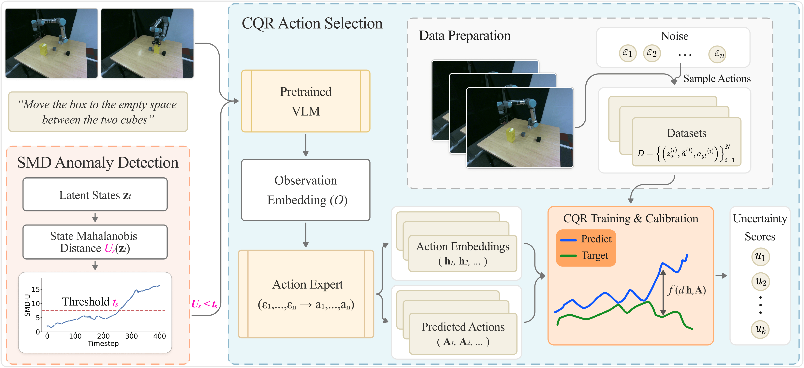

Vision-language-action (VLA) models have emerged as generalist robotic controllers that map visual observations and language instructions to continuous actions. However, pretrained VLAs typically provide limited information about the reliability of their generated actions, making deployment challenging when execution failures must be anticipated. We introduce SentryVLA, a lightweight runtime wrapper for frozen VLA policies. At the action level, SentryVLA uses conformalized quantile regression to estimate a calibrated upper bound on the predicted deviation between sampled VLA actions and expert-like behavior under the calibration distribution. The predicted deviation is then used to rank multiple stochastic candidates for action selection. At the execution-monitoring level, SentryVLA applies a Mahalanobis-distance-based anomaly score to the contextualized latent execution state extracted before final action prediction, providing a complementary signal for detecting abnormal execution states during closed-loop control. The framework does not require retraining or architectural modification of the underlying VLA policy. Experiments in simulation and on a physical robot show that SentryVLA improves action selection and provides useful runtime warning signals for abnormal execution states. These findings demonstrate the practical value of post-hoc reliability scoring for improving the runtime behavior of pretrained VLA policies.
If you find this project useful, then please consider citing our paper.
@inproceedings{lyu2026sentryvla,
title={SentryVLA: Uncertainty-Guided Action Selection and State Monitoring for Vision-Language-Action Robotic Control},
author={Lyu, Zongyao, Chen, Lingling, and Beksi, William J},
booktitle={Proceedings of the Conference on Robot Learning},
year={2026},
}The source code associated with this project is licensed under the Apache License, Version 2.0.